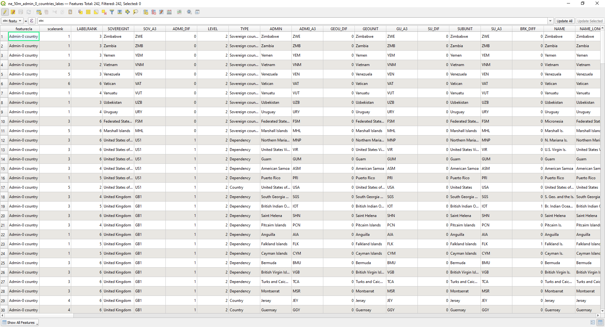
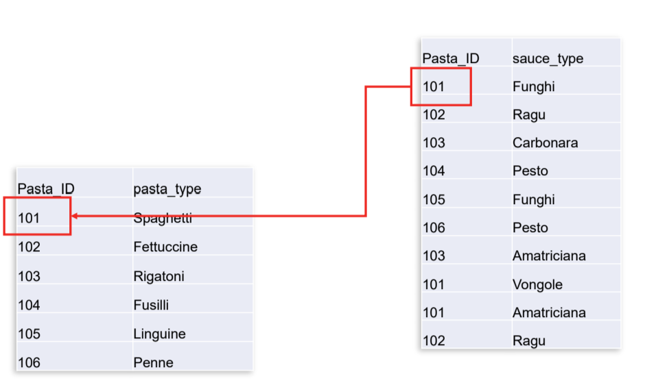
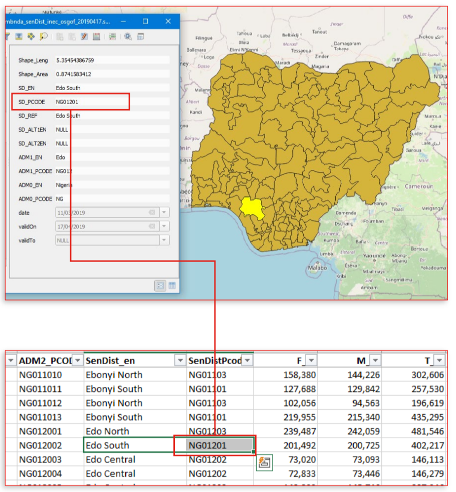
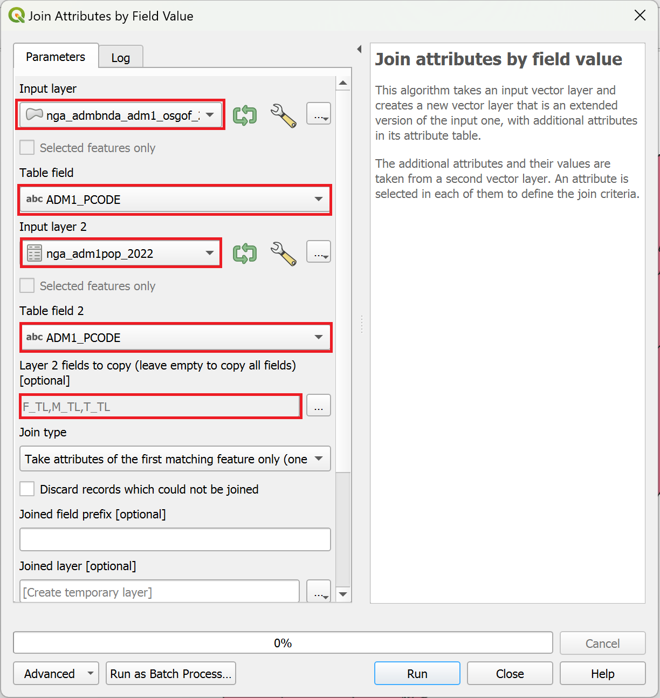
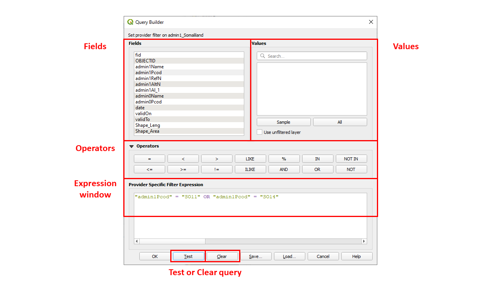

3.5. Non-Spatial processing#
3.5.1. Introduction#
Non-spatial data processing in QGIS refers to the manipulation of attribute data without directly involving spatial components or information, such as the spatial relationships or geometries.
It changes the non-geometric attributes of datasets (i.e., the attribute table).
Non-spatial processing can be used to perform calculations, generate statistics, and gain insights into the non-spatial aspects of geospatial datasets.
QGIS offers a variety of tools for non-spatial processing to assist users in managing and analysing attribute data effectively.
This can include data cleaning, transformation, enrichment, and analysis based on the associated attribute information, such as population statistics, land use classifications, or economic indicators.
{kind=link}

Fig. 3.19 Screenshot of an attribute table for QGIS version 3.28.4.#
3.5.2. Non-spatial joins (Join Attributes by Field Value)#
A lot of analysis can be done with just a single layer. But, sometimes, the necessary information we need for our analysis is split across different datasets/layers.
With QGIS, these layers can be combined to perform the analysis we want. The simplest way to combine layers is via an attribute join. This operation looks up information from a second data source based on a shared attribute value. This value functions as a common unique identifier, also known as an ID, UID, or key (see Fig. 3.20).
{kind=link}

Fig. 3.20 The entries in the two data tables can be joined via the common ID-field.#
Humanitarian example:
*A common GIS workflow in humanitarian work involving non-spatial joins is joining data on administrative boundaries using P-codes as the common identifier/shared attribute.
P-codes are identifying codes for administrative units (e.g. country (adm0), region (adm1), district (adm2)), that were introduced to simplify joining tabular data on administrative regions. These codes clearly identify the administrative units facilitating non-spatial joins.
For example: We have a spatial dataset containing the administrative boundaries of districts (adm2) in Nigeria and a data table containing the population per district, but without the polygons. By using the P-codes as identifying attributes, we can easily join the population data with the vector dataset.*
{kind=link}

Fig. 3.21 The P-code associated with the district Edo South is NG01201.#
Attention
An attribute join in QGIS only works properly, when the attributes match exactly.
For example: “S. Sudan” will not match with “South Sudan”.
Where possible it’s best to use attributes that have been designed for joining, such as P-codes or ID’s which are not susceptible to spelling mistakes.
3.5.2.1. Exercise: Performing a non-spatial join#
In this short follow along exercise, we will add the population data to the administrative boundaries layer (adm1).
Download the necessary layers here, unzip them, and add them to your QGIS-project.
Tip
The population layer needs to be added as a delimited text layer (Layer > Add Layer > ) with no geometry.
Open the “Join Attributes by Field Value”-tool from the processing toolbox
As the Input Layer 1, select the layer
nga_admbnda_adm1_osgof_20190417, set the “Table Field” toADM1_PCODEAs Input Layer 2, select the layer
nga_adm1pop_2022, set the “Table Field” toADM1_PCODE. Additionally, under “Layer 2 fields to copy”, selectF_TL,M_TL, andT_TL.Click
Run. A new layer will appear in your layer panel called “Joined Layer”.
{kind=link}

Fig. 3.22 Setting the parameters for the P-code join#
Open the attribute table for the new layer and scroll to the right. Here you will find the joined attributes
Great! We have successfully added the population data to our administrative boundaries layer. Now, we can visualise the population distribution or continue to analyse our data.

Fig. 3.23 The joined data is classified using the graduated symbology for the population value.#
3.5.3. Table functions#
Table functions usually only involve a single data layer and are manipulating the attribute table. You can add new fields, delete unwanted fields, or even calculate new fields using the field calculator.
For a comprehensive overview on the attribute table’s functionality and its purpose, you’re invited to explore the Wiki article on it.
3.5.3.1. Add field#
The information within a vector layer can be accessed through its attribute table, and it can be enhanced by introducing new fields to this table. These additional fields may be derived from calculations, as exemplified in the following case, where population density is computed to provide deeper insights into spatial population distributions.
Attention
The selection of the appropriate data type should align with the information being added to the new attribute field. Please keep this in mind while watching the example video.
Possible data types:
The most common ones are:
Whole number: Integer (32 and 64 bit)
Decimal number (real)
Text (string)
Additional options:
Date and Date and time
Boolean
Example: Add a field for population density
3.5.3.2. Delete field#
It is also possible to delete fields from the attribute table. A commonly used practice is to remove all unused or unnecessary fields from a layer before starting to work on it. This makes the dataset much more organised.
Example: Delete all unused/unnecessary fields from a vector layer
3.5.3.3. Calculate field#
An important practice is to calculate the attribute values for a field, e.g., based on the values of other fields. In QGIS, you can create a new field or update an existing field.
Note
It is necessary to check if the data type of the field (new or updated) and your calculation match. For example, if you are calculating a ratio (e.g. density), the field should not be of type integer but rather of type decimal number.
An example could be to calculate the population density based on the already existing fields Population and Area.
A very important tool for such calculations is the Field Calculator. It allows you to perform calculations based on existing attribute values or defined functions, for example, to calculate the length or area of a geometry feature or in the given example, could be used to calculate the population density based on the already existing fields Population and Area. The results of these calculations can be written into a new field or update an existing field.

Fig. 3.24 Screenshot of the Field calculator#
The most important groups and their respective functionality that are provided with the field calculator are listed below:
Fields and Values
Contains a list of fields from the layer
Geometry
Calculates the area of a polygon feature:
$areaCalculates the length of a line feature:
$lengthCalculates the centroid of a polygon feature:
centroid($geometry)Calculates the bounding box of a feature:
bounds($geometry)Calculates the distance between two points:
distance(point_a, point_b)
Maths
Calculates the square root of a field:
sqrt("field")Calculate
minandmax
Example: Calculate the population density
3.5.3.4. Basic statistics for fields#
The tool Basic statistics for fields generates statistics for a specific field of the attribute table of a vector layer. The results are generated as an HTML file and can be accessed by using the file path link in the Results Viewer. This operation is highly valuable for gaining a comprehensive understanding of the data you intend to work with. It allows you to determine the range of values, pinpoint the minimum and maximum values. In the provided example, this operation is applied to calculate the global population density, allowing you to easily identify the most densely populated region worldwide.
Example: Calculate statistics for the field population density for countries worldwide.
3.5.3.5. Statistics by categories#
To calculate statistics of a field depending on a parent class you can use the tool Statistics by categories. The parent class is a combination of values from other fields.
Questions that need to be considered when doing these calculations:
For which fields should the statistics be calculated in the attribute table?
Which field in the attribute table contains which information?
For greater precision in these calculations, “statistics by categories” offers more comprehensive insights than those mentioned earlier. In this case, it becomes simple to determine the number of cities per country with over 300,000 inhabitants and, for each country, the population living in the largest urban agglomeration.
Example: Cities with more than 300,000 inhabitants and the amount of population in the largest agglomerations
3.5.4. Non-spatial queries#
In GIS, you can query (filter) data based on specific attribute information. Once the filtering is successful, only the desired features that correspond to the chosen attribute are displayed. Data filtering is a valuable technique for creating subsets of features that can be exported as a new layer.
3.5.4.1. Manual selection#
It is possible to manually select specific rows by clicking on the number on the left side of it. This can be easily used to select a small number of rows. If they are selected successfully, they will appear in yellow.
Example: Manual selection of rows
3.5.4.2. Select by expression#
In this dialog, you can build your expressions to query the data. There are several operators that can be used to filter your vector layer.
operator |
functionality |
|---|---|
+ |
addition |
- |
subtraction |
* |
multiplication |
/ |
division |
% |
remainder of division |
operator |
functionality |
|---|---|
= |
equals |
!= |
not equal |
< |
less than |
> |
greater than |
<= |
less than or equal to |
>= |
greater than or equal to |
Operators such as AND, OR can be used to combine different queries or criteria
operator |
functionality |
|---|---|
AND |
logical AND |
OR |
logical OR |
NOT |
logical NOT |
operator |
functionality |
|---|---|
LIKE |
pattern matching |
IN |
checks if a value is in a list of values |
IS NULL |
checks for null values |
BETWEEN |
checks if a value is within a specified range |
CASE WHEN |
conditional expressions |
Querying your data to answer more complex questions is of great importance. This can be accomplished using the “Select by expression” tool. In the provided example, we aim to answer the question: Which cities, excluding those with a population of one million inhabitants in 1950, had grown to over ten million inhabitants by 2015?
Example: Cities, excluding those with a population of one million inhabitants in 1950, that have grown to over ten million inhabitants by 2015
3.5.4.2.1. SQL#
Another possibility to build your expressions is to use SQL.
SQL (Structured Query Language) is a standardised programming language that is used to manage databases and perform various operations on the data in them. In the Query Builder in QGIS, you can use SQL expressions to use one or more conditions to filter a layer.
You can easily access essential SQL statements by referring to this handy Cheat Sheet. This offers a concise overview of the core functionalities.
3.5.4.3. Query Builder#
The Query Builder provides an interface that allows you to define a subset of the features in the layer using SQL-like statements and to display the results in the main window. As long as the query is active, only the features corresponding to its result are available in the project. You can use one or more layer attributes to define the filter in the Query Builder. The Query Builder is built as follows:
{kind=link}

Fig. 3.25 Screenshot of the Query Builder#
The Fields list contains all the fields of the layer. To add an attribute column to the expression window, double-click its name or just type it into the box.
The Values frame lists the values of the currently selected field.
To list all unique values of a field, click the All button.
To list the first 25 unique values of the column, click the Sample button.
To add a value to the expression window, double click it in the Values list. You can use the search box at the top of the “Values”-panel to easily browse and find attribute values in the list.
The Operators section contains all usable operators. To add an operator, click the appropriate button.
The Test button helps you to check your query and displays a message box with the number of features satisfying the current query.
Use the Clear button to revert the layer to its original state.
Note
When a filter is applied with the Query Builder, QGIS treats the resulting subset as if it were the entire layer.
In this short video, you will discover the location of the query builder and learn how to create a straightforward query for isolating a particular state from a dataset that covers the entire country. The example focuses on a dataset related to South Sudan and serves as a basic illustration.
Example: Simple usage of the Query Builder.
3.5.5. Self-Assessment Questions#
Test your knowledge
What does “non‑spatial processing” mean in the context of GIS/QGIS? How does it differ from spatial operations?
Answer
Non‑spatial processing refers to operations that act solely on the attribute side (the table or data columns) of a layer, without using or modifying the geometry (location, shape) of features. You are manipulating data about features, not their spatial relationships.
Examples include adding, deleting, or updating fields; filtering records based on attribute queries; performing table joins based on matching key fields; computing new values from existing attributes.
In contrast, spatial operations involve geometry — they use spatial relationships (proximity, intersection, containment) and often produce changes in the shape, size, or arrangement of features (for example buffer, intersect, clip, union). Spatial tools compute new geometry or restructure existing geometry.
What is a “non‑spatial join” (Join Attributes by Field Value)? Describe how and when you would use it.
Answer
A non‑spatial join (in QGIS often called Join Attributes by Field Value) links attribute data from one table (or non‑spatial data) to another feature layer based on a common key (field) value, not based on geometry. It is also called a tabular join or attribute join.
You’d use it when you have two datasets that share a common attribute (e.g. a region code, an ID, a name) and you want to enrich one layer with additional attributes from the other. For example: you have a layer of administrative polygons and a separate table of population statistics keyed by the same admin code; you want to bring those population figures into the polygon layer so you can map or analyze them.
The non-spatial join adds fields from one layer or dataset into the target layer’s attribute table where the key matches.
What conditions must be true for a non‑spatial join to work correctly? (E.g. key fields, matching values, data types)
Answer
Common key field present in both tables
Both the target layer (the one receiving the join) and the join table must have a field (column) that is the “join key,” which contains matching identifiers in corresponding rows.
Matching values in those key fields
The values in the key field must overlap: for each feature in the target layer that you want to get joined data for, there must be a matching value in the join table’s key field. If there is no match, the joined value will typically be NULL or blank.
Compatible data types
The key fields should be of the same or compatible data type (e.g. both integer, or both text) so that QGIS can match them. If one is a text field and the other is numeric, matching won’t work reliably.
Uniqueness of values
Ideally, the join table should have unique values in the join key (one-to-one join). If there are multiple matching rows (one-to-many), then you might end up with duplicates, or ambiguous matching — QGIS may either take the first match or aggregate, depending on the join method.
The target layer normally does not change its number of features — the join just appends fields, not duplicating geometry (unless you convert to a permanent joined file in a different way).
What kinds of operations can you perform using table functions (add field, delete field, calculate field)?
Answer
Add field: Create a new attribute column (of a chosen type, e.g. integer, decimal, text) to hold computed or imported values.
Delete field: Remove unwanted or redundant fields/columns from a layer’s attribute table.
Calculate field (Field Calculator): Compute new values (for existing or new fields) using expressions (arithmetic, conditional logic, functions) based on other attributes, constants, or functions. For example: calculate population density = population / area; or classify values using CASE WHEN logic.
Update/Edit existing field: You can also update or overwrite values in an existing field, provided the layer is in edit mode.
What is a non‑spatial query? How would you use “Select by expression” to filter your data?
Answer
A non‑spatial query is a query applied to the attribute table (fields) rather than based on geometry. It filters or selects rows (features) based on attribute conditions, not spatial conditions.
In QGIS, “Select by expression” is a tool you can use to write logical expressions (e.g.
"population" > 10000 AND "region" = 'East') to select the subset of features whose attributes satisfy the criteria.After selection, you can use the selected subset for further operations (e.g. export selected features, style them differently, analyze only them, etc.).